1compagnie aérienne créée
4piliers stratégiques
2phases de déploiement
1crise simulée et gérée
Le contexte et la commande
- SAE S6.02 : créer une entreprise fictive et piloter son image en ligne, de la ligne éditoriale à la gestion de crise.
- Projet Aura Airlines : une compagnie aérienne premium, positionnée sur l’expérience client et la personnalisation par l’intelligence artificielle.
- Terrain d’observation : Emirates, Qatar Airways, Turkish Airlines et les compagnies low cost.
La problématique
Construire l’identité stratégique d’une entreprise, analyser son environnement concurrentiel et mettre en place une stratégie de communication digitale.
Le positionnement
- Une compagnie premium combinant luxe moderne, innovation technologique et responsabilité environnementale.
- Quatre piliers : expérience globale, IA et personnalisation, design contemporain, transparence et responsabilité.
- Face à Emirates, Qatar Airways et Turkish Airlines, un positionnement de niche sur le luxe responsable et la transparence.
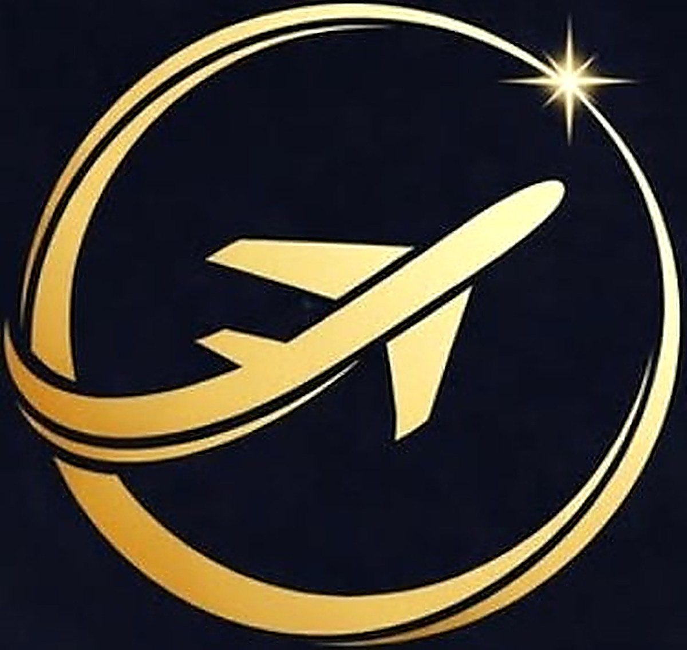
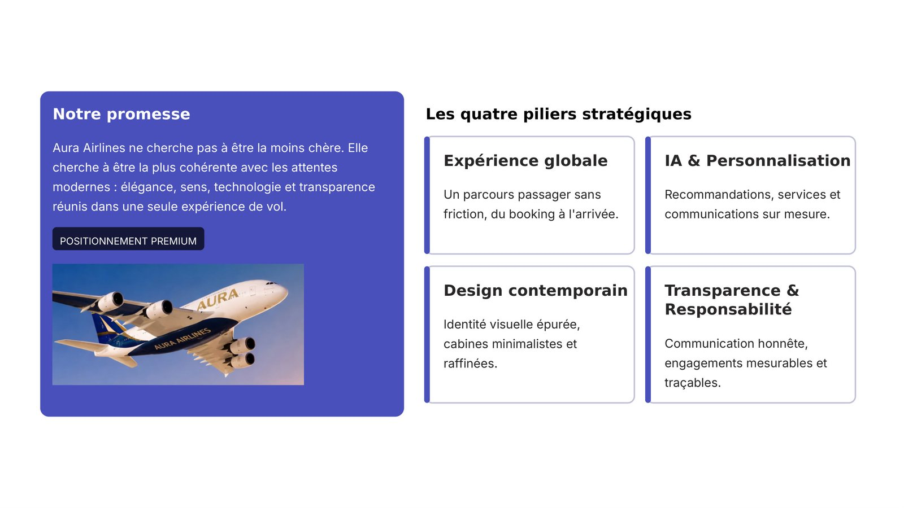
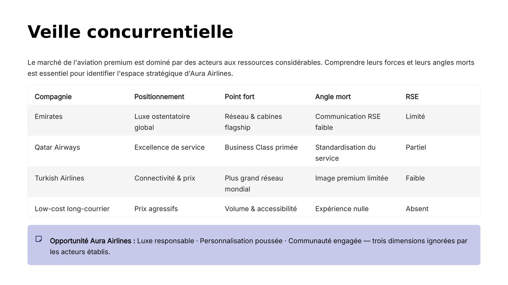
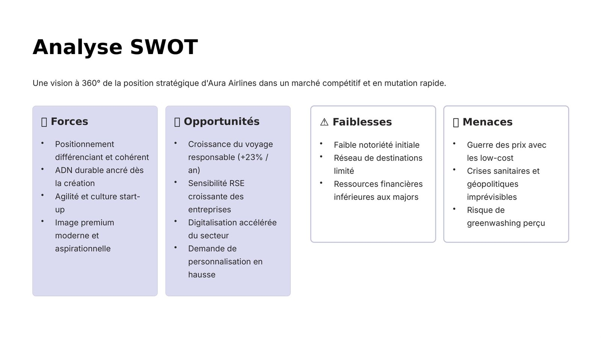
La présence digitale
- Création d’un compte Instagram dédié pour simuler la présence digitale de la compagnie.
- Publications valorisant l’expérience premium à bord, les destinations, l’identité visuelle et les engagements responsables.
- Méthode de traitement des commentaires : remercier, répondre factuellement, expliquer sans se justifier, assumer le positionnement.
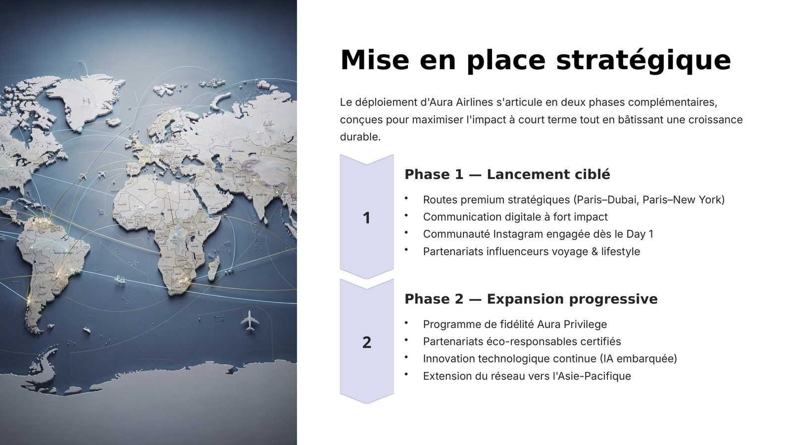
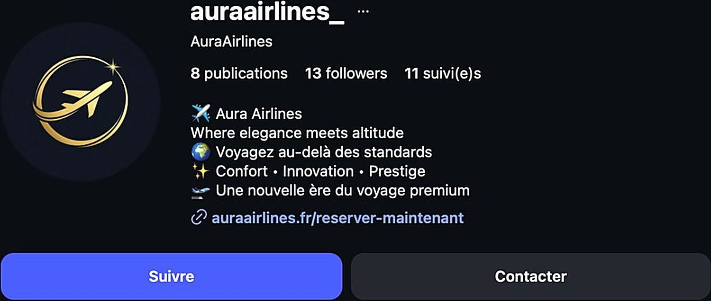
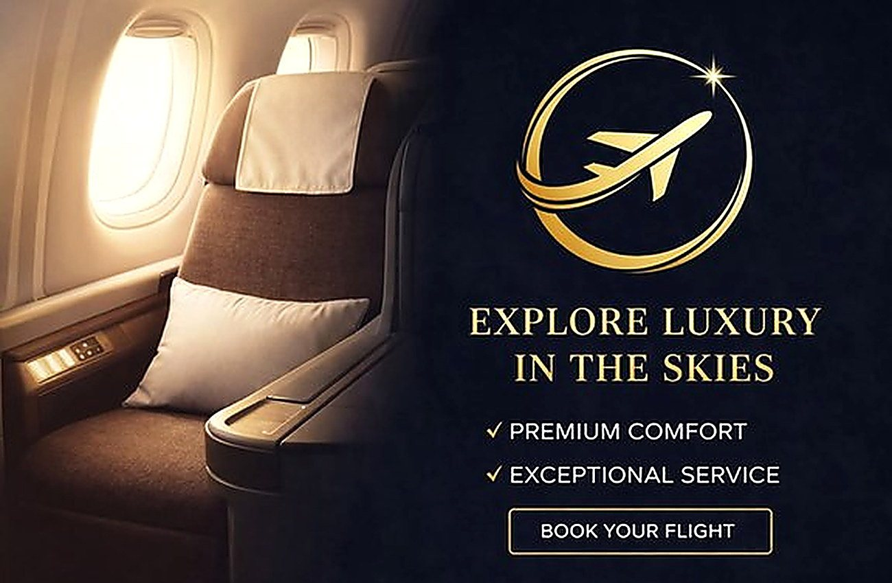
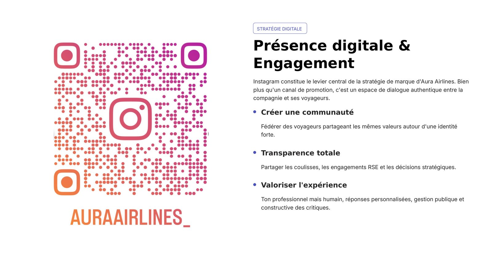
La gestion de crise
- Scénario simulé : annulation d’un vol pour une passagère en fauteuil roulant, provoquant des accusations de discrimination sur les réseaux sociaux.
- Réponse déployée : communiqué officiel reconnaissant l’incident, excuses publiques, audit interne et cellule dédiée à l’accessibilité des passagers à mobilité réduite.
- Enseignement : anticiper plutôt que réagir, la communication stratégique sauve des réputations, toute crise est une opportunité de crédibilité.
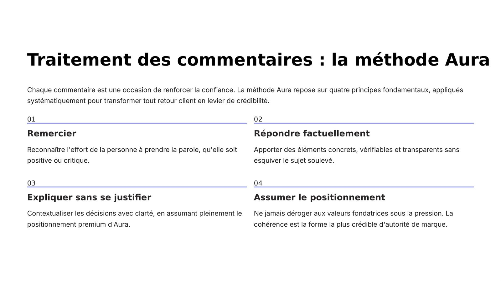
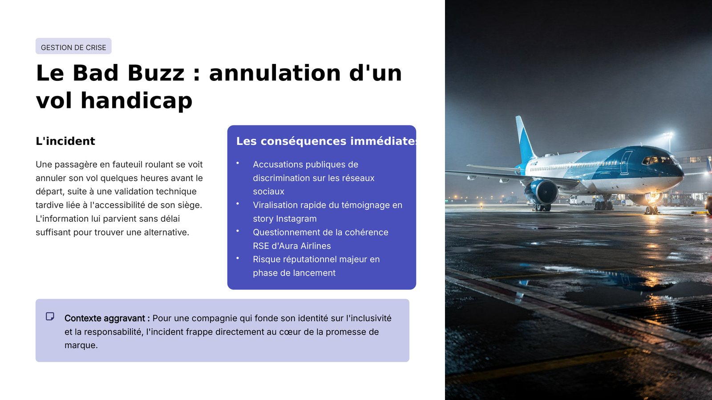
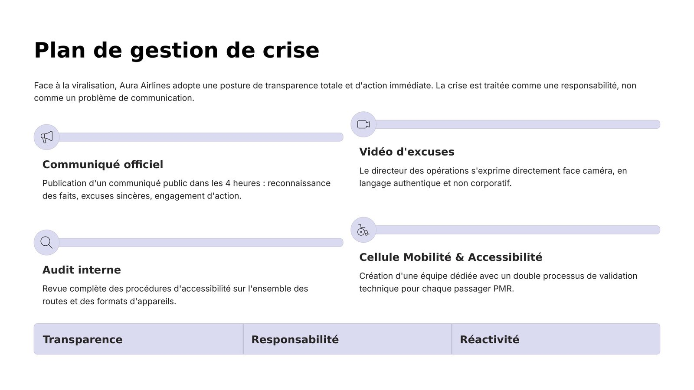
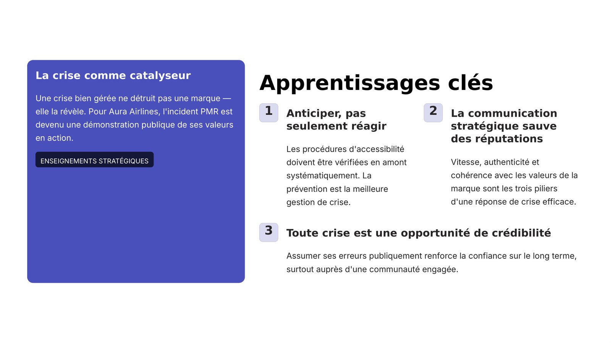
Ce que j’ai produit
- Identité de marque complète : nom, logo, charte visuelle et quatre piliers stratégiques.
- Veille concurrentielle structurée : positionnement, point fort et point faible de chaque acteur du marché.
- Présence digitale déployée — compte Instagram, visuels publicitaires et stratégie d’engagement de la communauté.
- Méthode de traitement des commentaires en quatre temps : remercier, répondre factuellement, expliquer sans se justifier, assumer le positionnement.
- Crise simulée — l’annulation d’un vol pour une passagère à mobilité réduite — et plan de réponse : communiqué officiel, vidéo d’excuses, audit interne et cellule accessibilité.
Ce que j’en retire
- Anticiper vaut mieux que réagir : une crise se prépare avant d’arriver.
- Une communication stratégique bien menée peut sauver une réputation.
- Toute crise correctement traitée devient une occasion de gagner en crédibilité.
Outils et méthodes mobilisés
InstagramLigne éditorialeVeille concurrentielleGestion de criseCanva